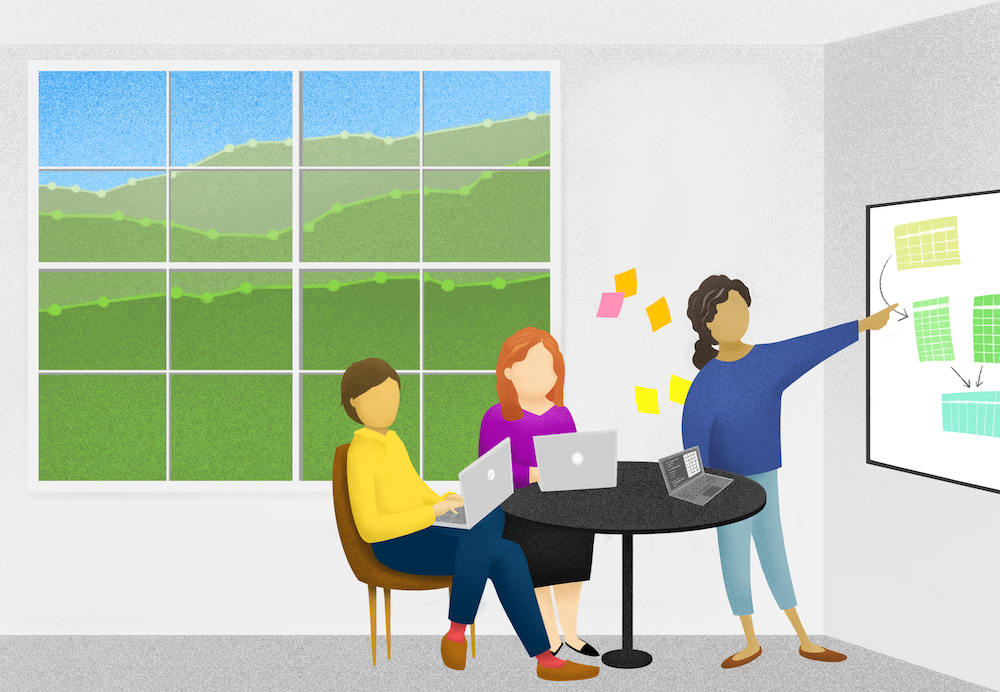
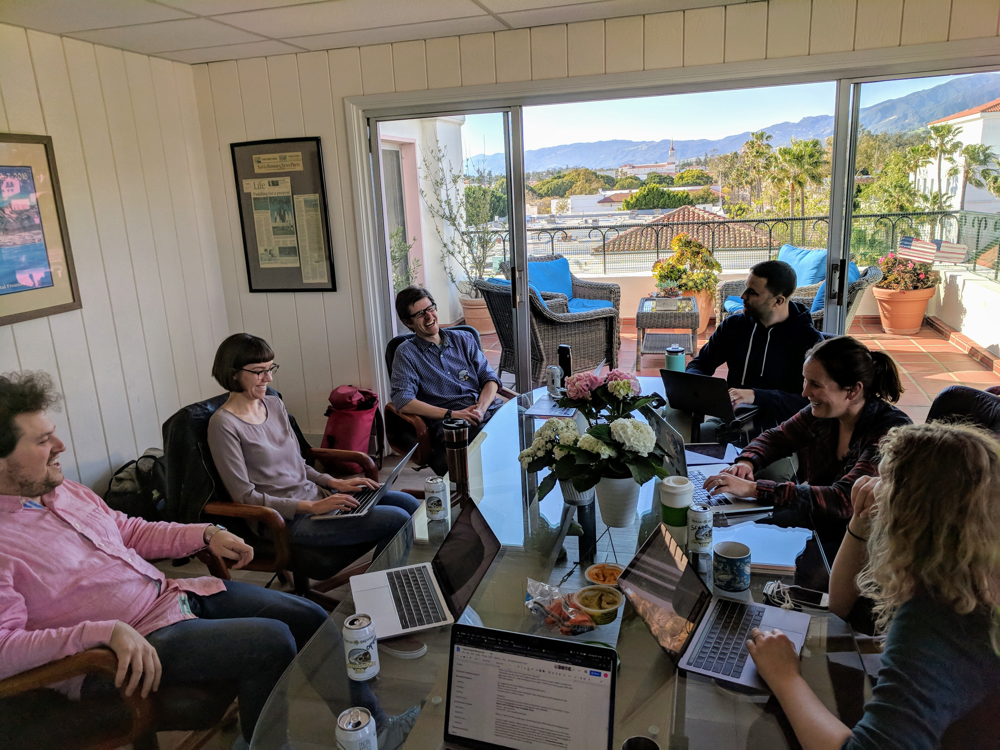

Supercharge your research: a ten-week plan for open data science
This article was published in October 2019 at Nature Careers (DOI: 10.1038/d41586-019-03335-4).
Below is the full text of the article.
Article text.
Supercharge your research: a ten-week plan for open data science
Julia S. Stewart Lowndes, Halley E. Froehlich, Allison Horst, Nishad Jayasundara, Malin L. Pinsky, Adrian C. Stier, Nina O. Therkildsen & Chelsea L. Wood
Despite the collaborative nature of scientific research, a key component — data analysis — can be a lonely burden. Undertaken by researchers who largely lack formal training in data and open science, such analyses are often bespoke efforts that scientists must perform on their own, reinventing the wheel as they do so. Moreover, when we become faculty members, lecturers and project managers, we can feel unqualified to establish more responsible data practices and unsupported in this endeavour, despite mounting need. We found a sustainable approach to establish more responsible data practices in our research groups through Openscapes, a mentorship programme originally funded by the open-source software company Mozilla in Mountain View, California, and operated by the National Center for Ecological Analysis and Synthesis (NCEAS) in Santa Barbara, California. Openscapes has helped us to supercharge our research, and we have advice on how others can ignite change in their own teams.
As we originally understood it, open science had little relevance to or benefit for our daily research — largely because it was not clear how to implement it. We narrowly interpreted the concept to mean only sharing data on publication, and we assumed data science was applicable only to big data and machine learning. Existing software tools that could automate data analysis seemed out of reach as we quietly handcrafted our own approaches to write code and analyse data.
Now, we have reframed data analysis as a collaborative effort rather than an individual burden. We regularly discuss our data challenges as a team, starting with the expectation that better approaches and tools exist and that we can find them together.
Our idea of open data science blends R developer Hadley Wickham’s definition of data science — “turn[ing] raw data into understanding” — with open science tools and practices, such as using collaborative version-control platforms for code and project management. Empowered by our new perspective, we are establishing such practices in our groups by creating workflows that facilitate reproducibility and data sharing, and that streamline code organization and collaboration. All of our approaches are centred around an ‘open’ ethos.
This transition requires a shift in mindset as much as an investment in skill development and team-building. Here are three ideas for how research groups can get started, and a plan for kick-starting this change in ten weeks (see ‘A ten-week plan for open data science’).
1-Normalize data discussions
Create digital and physical spaces where group members — despite having differing research questions and expertise — feel comfortable discussing data challenges and seeking, offering and accepting guidance from one another. Scheduling regular data-centric meetings demonstrates that this is a priority and promotes a more open culture; naming these meetings can give them value and identity. (The Ocean Health Index team at NCEAS calls these meetings Seaside Chats.)
You do not have to be an expert to initiate conversations about data in your research group. You do, however, need to become comfortable enabling group members to learn from, with and for each other — which means encouraging them to engage with coding communities both online and in person. For instance, they might follow #rstats discussions on Twitter, attend or organize in-person coding clubs and ‘hacky hours’, or contribute documentation and tutorials to open-source projects. Encouraging horizontal leadership within your research group is crucial for seeding better data practices and for evolving alongside the ‘software-scape’.
2-Identify and address shared needs
Start by discussing the software and workflows that group members use for reproducibility, collaboration and communication. What software is used for data analysis, data storage and documentation, for instance? How do members share data and methods, and request feedback? And how do members learn to use these tools?
Once your team’s needs are known, choosing paths forward will require identifying and acting on shared priorities in the research group, such as organizing scripts, improving metadata and building skill sets. Skill-building opportunities can include online tutorials and videos, workshops, skill-sharing meet ups and university courses. The goal is not perfection, but incremental improvement through attainable goals.
3-Think ahead
Think of yourself as your most important future collaborator because you are most likely to build on your own work. Consider the broader community — your research group, co-authors and colleagues you have yet to meet — to be potential important collaborators, who might not have been involved in the original effort. What will make it easier for ‘future you’ to continue a project that has been idle for several months? What can you do to help ‘future us’ bring in members to contribute to and build on the work?
More broadly, consider how you can better prepare students to contribute to science. This means not only establishing practices encouraging open data science in your research group, but also championing it broadly. Declare its importance in meetings and presentations, and on social media; support coding meet-ups and training sessions by providing space and funding; and develop university courses and hire dedicated scientific computing staff to support research groups of all sizes.
Through Openscapes, we learnt that open data science is empowering and achievable, and saves precious time for our future selves, both as individuals and as teams. We also realized that it is never too late to engage in the practice, and that the best way to get started is to talk about current approaches to data and code, no matter the perception of expertise or quality. In our experience, investment in open data science can promote resilient workflows and reinforce a culture of inclusion, trust and innovation. Frank discussions help to identify needs that can be addressed through workshops and online tutorials that provide a diversity of entry points, because no one size fits all.
Upgrading workflows, building coding skills and creating space for discussing data takes time and effort. But by valuing teamwork and building trust, we have found that incorporation of open data science can promote more collaborative, transparent and meaningful research, and can help to ignite systemic change from the inside out. We welcome you to join us.
Images.


Box 1.
A ten-week plan for open data science
Here are suggestions for ten weekly meetings to reshape your research group’s perspective. These meetings should be encouraged by the team leader, but they don’t necessarily have to attend. Activities can span multiple weeks and are to be revisited as needed (for example, when new members join). Note that resources are R focused, but remain illustrative of good theory and practice no matter the coding language.
Week 1: What does a team workflow using open data science look like? What does the transition look like?
Long-term goals: Transition into open data science incrementally, and involve peer-to-peer learning and online communities.
Read: Lowndes, J. S. S. et al. Nature Ecol. Evol. 1, 0160 (2017).
Discuss: How do we approach reproducibility, collaboration and communication?
Week 3: What are our values? How do we build trust and facilitate collaboration?
Long-term goals: Set the tone for a positive, inclusive culture.
Read: Nature 557, 293 (2018). Also, read Notes on our lab Code of Conduct and Write or Choose a Code of Conduct.
Discuss: How do these topics align with our values?
Task: Create a code of conduct or working agreement.
Week 4: How do we streamline other aspects of our research, such as presentations and teaching?
Long-term goals: Create a culture of sharing text (for example, manuscripts and proposals), photos, posters and presentations.
Discuss: What are we comfortable sharing with each other? How can we streamline organization and sharing of files?
Task: Create and organize a Google Drive for the group. Explore Google Slides and Drawings.
Week 5: How do I collaborate easily with people who are remote or in different time zones?
Long-term goals: Reduce barriers to remote participation, and enable asynchronous collaboration..
Read: GitHub for Project Management.
Discuss: What programs do we use, and what accounts does our institution have?
Task: Explore software options for video conferencing, group chat and project management, such as Zoom, Slack and GitHub.
Week 6: Which version of my code was I using, and where is it?
Long-term goals: Use collaborative versioning software, and think ahead for ‘future you’ and ‘future us’.
Read: Bryan, J. Am. Stat. 72, 20–27 (2017) – or as PeerJ preprint Also, read Fishbowl Chat #1.
Discuss: How can we help the whole group to use version control collaboratively?
Week 7: I can’t understand or run other group members’ code.
Long-term goals: Adopt shared practices so that it’s easier to collaborate using code.
Read: Bryan, J. & Hester, J. What They Forgot to Teach You About R Ch. 1–4 (2019). Also, read Ross, Z., Wickham, H. & Robinson, D. (2017).
Discuss: How do we organize files, code and projects? Could we adopt shared conventions?
Week 8: How do we record and organize data to streamline analyses?
Long-term goals: Promote good data-entry etiquette and keep raw data separate from analyses.
Read: Broman, K. W. & Woo, K. H. Am. Stat. 72, 2–10 (2017).
Discuss: Do we keep raw data raw and recorded with future analyses in mind?
Week 9: How do we help new group members to learn how we work, and how do we retain continuity when people leave?
Long-term goals: Create a strategy for onboarding and offboarding members that promotes openness and inclusion.
Read: How we work: Onboarding.
Discuss: What would help to onboard new group members?
Task: Create and share a document outlining the onboarding and offboarding processes for your group.
Week 10: How do we continue learning and improving how we work together?
Long-term goals: Create a shared vision for future meetings so they provide a mix of skill development and team building.
Discuss: How can we set topics, and how do we rotate who leads?
Task: Identify learning opportunities (for example, rOpenSci, R-Ladies or The Carpentries). Work out what allies you have at your institution (such as data librarians or coding clubs).